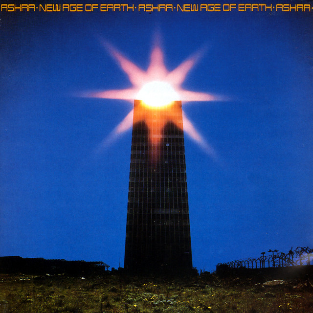
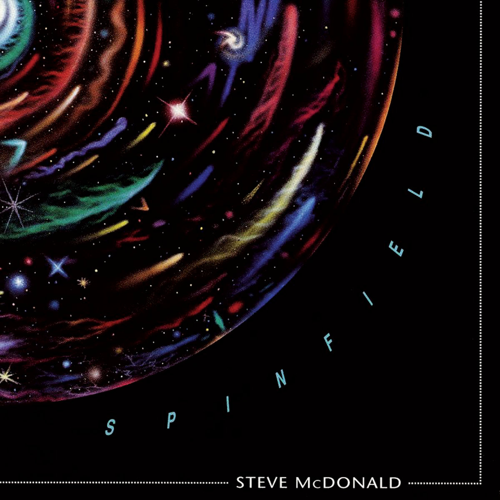
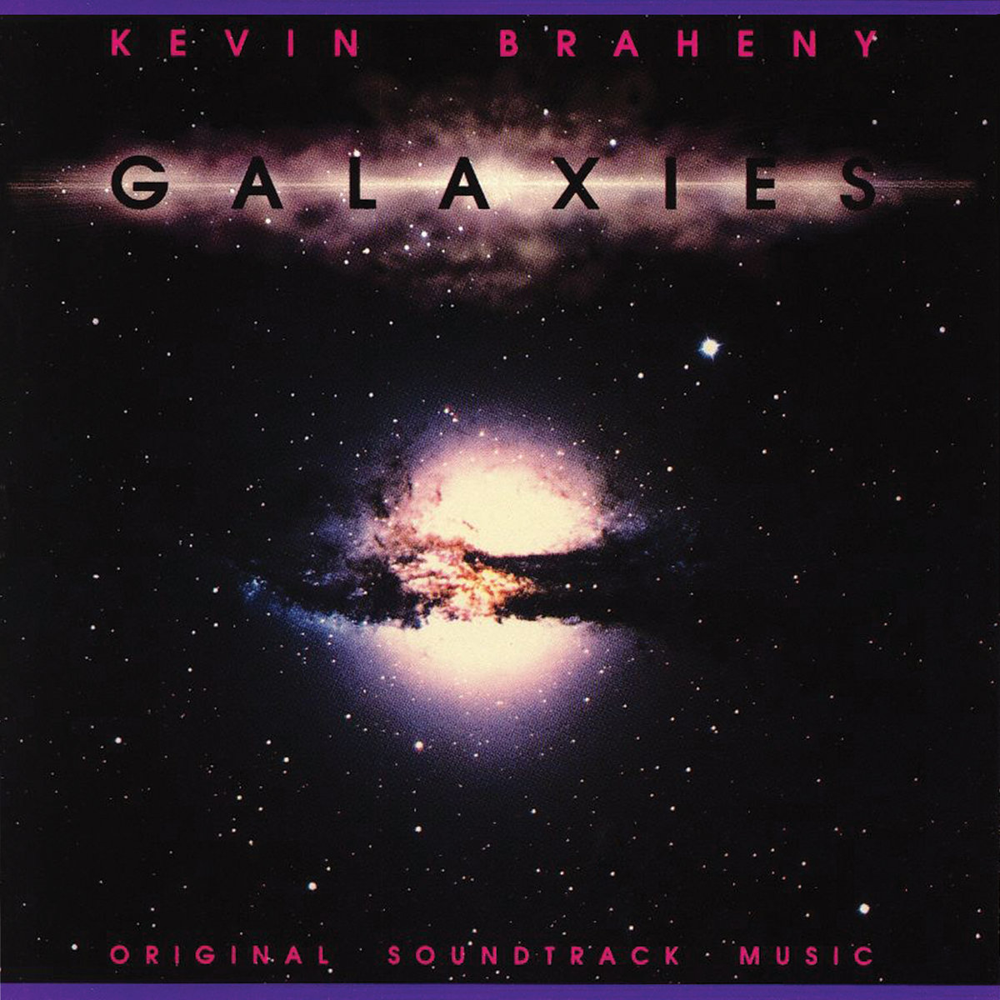

This page is a showcase of my favorite music. Since I have not made any music, I will not be showcasing my own music, but music from other creators that I enjoy. I have chosed 3 creators to showcase and listed some of their songs here.
Electronicos Fantasticos
Electronicos Fantasticos is a small Japanese group that recently started to gain some traction on Youtube. Their style of music is called "Electromagnetik Punk." They have taken old electronics like TVs and fans that weren't being used anymore and made them into instruments. I think their music is really interesting and different.
-
Artist: Electronicos Fantasticos
Title: CRTelecaster NEO
Released: January 1, 2025
Website: electronicosfantasticos.com -
Artist: Electronicos Fantasticos (feat. Namichie x Submarine)
Title: 『電磁龍 Dian Ci Long feat. Namichie x Submarine』
Released: June 30, 2023
Website: electronicosfantasticos.com -
Artist: Electronicos Fantasticos (feat. Namichie x Submarine)
Album Title: 「電磁祭囃子 Electromagnetic Matsuri Bayashi in Neo Tokyo / 電磁龍 Dian Ci Long」
Released: June 30, 2023
Website: electronicosfantasticos.com
Hearts of Space
Hearts of Space is a radio program that started airing in 1973 and has continued airing until today. Hosted by Stephen Hill, Hearts of Space features new age, ambient and electronic music as well as other genres. The radio program includes many different artists. I like this music for its ambient and new age style as well as the plethora of music they have. If you want to visit their website, click here.
-

Artist: Ashra
Title: Ocean of Tenderness
Album Title: New Age of Earth
Released: 1976
Website: ashra.com -

Artist: Steve McDonald
Title: Arcturian Sunbird
Album Title: Spinfield
Released: 1989
Website: music.youtube.com -

Artist: Kevin Braheny Fortune
Title: Starflight 1
Album Title: Galaxies
Released: 1988
Website: kevinbrahenyfortune.com